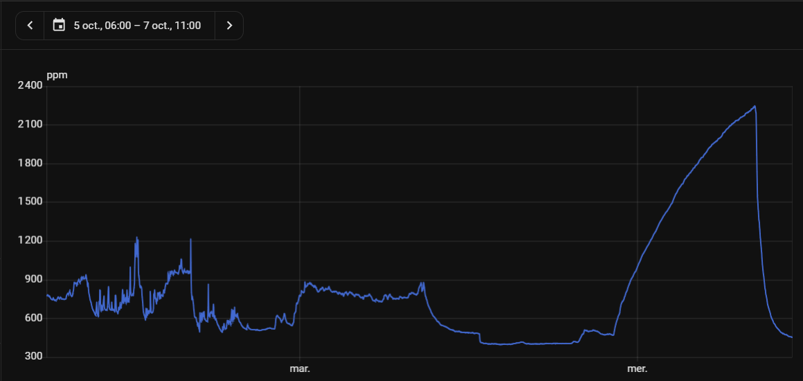
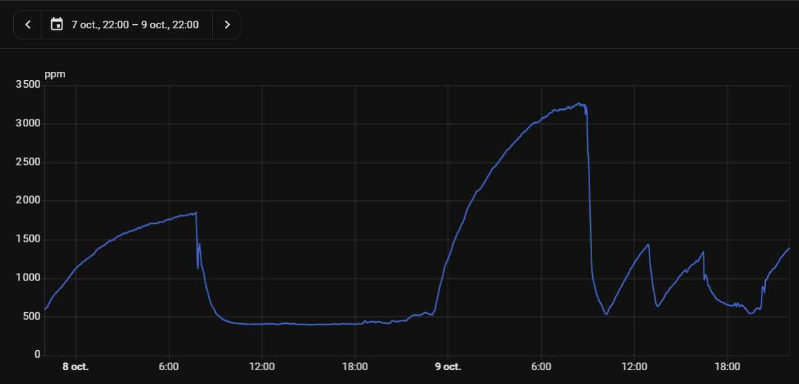
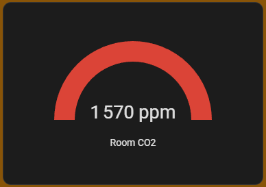
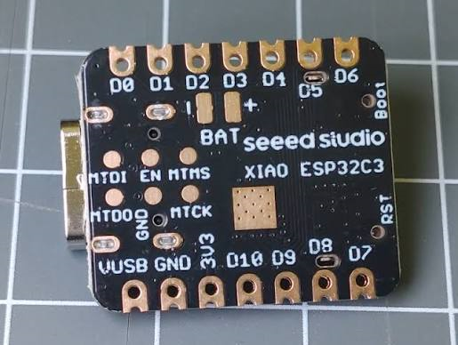
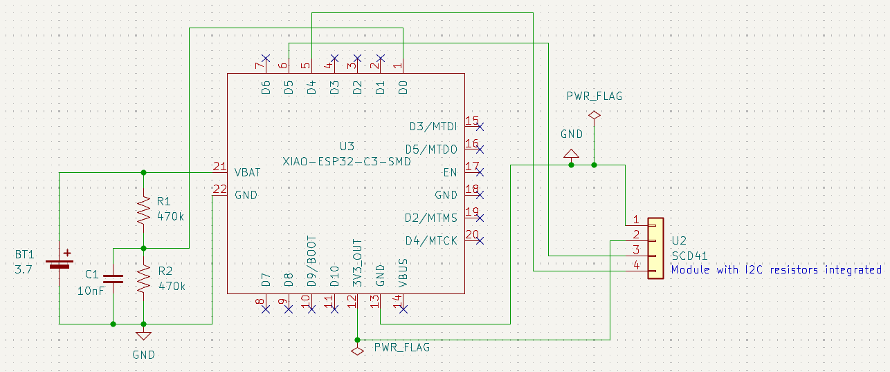
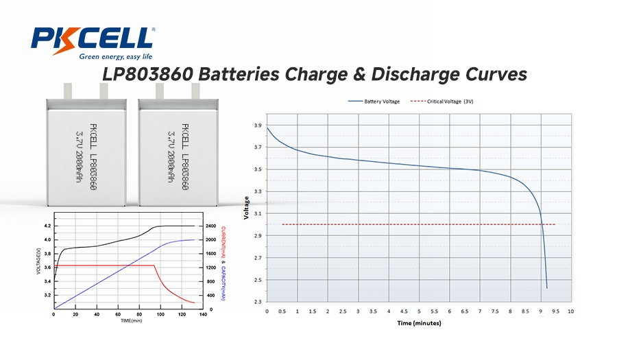
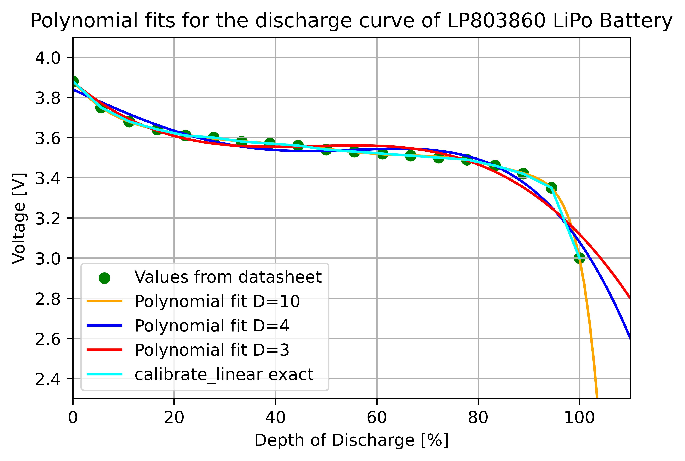

Stribog - CO2 sensor
To avoid poor sleep or worse decision making and focus, the Slavic god of wind, sky and air tells me when CO2 reaches a critical concentration and pushes my to open my windows.
- domotics
- electronics
- personal project

Table of Content
- Context
- Objective
- Realization
- V1 - Getting familiar with HA and ESPhome
- Flashing the ESP & connecting to Yggdrasil
- First measures
- V2 - Battery power the sensor
- Adding a battery to the device
- Measuring battery level
- Optimizing battery lifetime
- V3 - Design a PCB and create a 3D printed enclosure
- V1 - Getting familiar with HA and ESPhome
- Materials
- Future
- History
- Links
Context
The idea began during the COVID era and then was accelerated with the discovery of Birdie (the CO2 monitoring station)
and reading about the effect of CO2 concentration on sleep quality, focus and decision-making ability.
However, between the price for Birdie and the curiosity to understand and create a device that could tell me when to open the windows to stay alert,
I started looking into creating such device and I chose to build it using Home Assistant as the backbone.
Before trying to build one I looked for already existing devices, but the cheap ones are not really good or need monitoring to check if a threshold is reached (and I don't want a strong buzzing during the night!).
The others are quite expensive (hello Birdie) even though its design and additional motor can justify an increased price.
Moreover, these devices are not modular and I can not tinker with them to automatize anything easily, that's where I started looking to build one.
The CO2 concentration is measured in [ppm] - part per million, and generally we can admit that there are typical levels to observe when looking at air quality.
Below 800 ppm, the air is quite good and the concentration in carbon dioxide should not alter judgement/reflexion speed (note that the average concentration outside sits around 400 to 500ppm in the countryside or the city).
Between 800 and 1200 ppm, there can be slight drops in attention and concentration, and above 1200 ppm it's clearly time to open the window and let air circulate inside.
| Concentration [ppm] | Condition and effects |
|---|---|
| 400-800 | Good conditions |
| 800-1200 | Deteriorating conditions, slight lost in focus and dizziness |
| >1200 | Poor conditions, sleepiness can begin time to open the windows ! |
There are already many different tutorials on how to build a CO2 sensor with Home Assistant, but there is something that always bothers me, you need to constantly keep the captor plugged in, even if you only take a measure every five minutes. Moreover, it takes an electric plug spot and a when you have small rooms with limited power plugs, you're quickly out of options. You could say, I plug it to my computer, but as I am usually using a laptop, I don't want to have it using on of the USB plugs. These different reasons explain why I aim to build a battery powered sensor, taking advantage of the deep sleep mode of the ESP32C3 (more about that in the V2).
Objective
Create a battery powered CO2 sensor communicating with the home server to launch an alert when the concentration reaches 1200 ppm.
Realization
The project is built around 2 mains components, the sensor, an SCD41 from Sensirion (more info here) and the brain, an ESP32C3 from SeeedStudio (bought un soldered in pack of 3 - here) communicating using the I2C protocol. The construction of the final sensor is made through 3 iterations:
- V1 is not yet battery powered, the juice is provided by the USB-C connection of the ESP32C3,
- V2 is created to test the battery powering of the ESP and sensor
- V3 goes a step further and aim to create a complete device, with PCB and 3D printed case
V1 - Getting familiar with HA and ESPhome
After installing Home Assistant OS on the Raspberry, I simply added the ESPHome add-on to monitor and use various sensors. The GY-SCD41 module used possesses already Dupont wires that can be easily connected to the pins of the ESP32C3 that I already soldered. The VCC and GND from the sensor are connected respectively to the 3V3 and GND power pins of the ESP. The data line, SDA, is connected to pin GPIO6 (D4) of the ESP and the clock line, SCL, is connected to the pin GPIO7 (D5). The ESP is then branch through its USB-C and the first YAML code is flashed on it.


The first YAML script is basic: definition of the esp, sensor as well as the pin used and setup of the Wi-Fi to be able to have the ESP communicate with the HA server. To avoid having the keys and sensible data in the YAML, they are stored within secrets inside ESPHome. The sensor simply measures the values for CO2, temperature and humidity every 60 seconds and sends them to the server. I also created a first automation sending me a notification when the CO2 level rises above 1200 ppm. Home Assistant also lets you test the automation manually, which is nice to check if the phone is correctly appaired with the server and the HA app.
# Board: Seeed Studio XIAO ESP32C3
# Definition: definitions/boards/seeed_xiao_esp32c3/manifest.yaml
esphome:
name: stribog
friendly_name: Stribog
esp32:
variant: esp32c3
logger:
hardware_uart: USB_SERIAL_JTAG
api:
encryption:
key: !secret stribog__encryption_key
ota:
- platform: esphome
wifi:
ssid: !secret wifi_ssid
password: !secret wifi_password
ap:
ssid: Stribog Fallback Hotspot
password: !secret stribog__ap_password
captive_portal:
# I2C Bus for SCD41
i2c:
sda: GPIO6 # D4
scl: GPIO7 # D5
scan: true
# Sensor SCD41 (Sensirion)
sensor:
- platform: scd4x
co2:
name: CO2
id: stribog_co2
icon: "mdi:molecule-co2"
device_class: carbon_dioxide
unit_of_measurement: ppm
temperature:
name: Temperature
icon: "mdi:thermometer"
device_class: temperature
unit_of_measurement: °C
id: stribog_temperature
humidity:
name: Humidity
icon: "mdi:water-percent"
device_class: humidity
unit_of_measurement: "%"
id: stribog_humidity
update_interval: 60s
address: 0x62
temperature_offset: 4°C
The device was working then continuously through the USB-C powering to obtain data and check them as well as verify if the notification system works. The first nights of data are shown below, the graph is separated in different zones, first the end of the 5th of October, we can observe the various peaks and decreases as I was working on the device and was litteraly breathing around it. Then the night was quite hot, so the window was left open, we can observe the plateau around 800 ppm. In the morning, we leaving, the plateau decreases to around 450 ppm the base until return home around 18h. Finally the last parts shows the increase during a night where the windows are closed, we can observe the steady increase as I sleep and the sharp decrease upon window opening in the morning.

A second interesting data set is from 07/10 to 09/10 where we can observe two main differences, first a day without anyone in the room versus a day where I stayed working inside it. The plateau below 500 ppm is compared to the peaks during the second day, and it is clear that the notification system works because we can observe the sharp decrease when I receive it and open the windows. The seconde difference lies during the nights whether alone or 2 people sleeping, the height of the peak is different.

The data can be displayed in various ways using the smart card system of Home Assistant, I personally enjoy showing a gauge on my dashboard to directly see the last measured value as well as the level (good, moderate, bad) at a glance. The gauge goes from green to orange to red when reaching the previously noted levels.

The code for this kind of gauge is simple, but it also can be made directly without coding through the dashboard modification of Home Assistant.
#Gauge displaying of the CO2 level with severity levels
type: gauge
entity: sensor.stribog_co2
unit: ppm
min: 0
max: 1500
severity:
green: 400
yellow: 800
red: 1200
needle: false
name: Room CO2After these first concluding tests from the data and the notification point of view, it went on to try and battery power the sensor to avoid having to use a usb port or a power plug continuously.
V2 - Battery power the sensor
The next step is to start battery powering the device, to do so, I ordered a simple 3.7V LiPo battery when I bought the sensor from TinyTronics. The battery can be soldered to the bottom pads of the ESP32C3 and it will then provide the 3.3V required to the sensor. The pads BAT+ and BAT- are located below the ESP.

Moreover, the ESP integrates a charging chip that can be used to recharge the battery when connected to the USB-C. This gave rise to an idea, I want to be able to see the battery level to know when it needs recharging, by receiving a notification, using the automation system of Home Assistant. This can be done using an ADC (Analog to Digital Converter) pin of the ESP32. It can be used to read the voltage and have an indication on the battery level. However, this value can not be read directly from the battery as it would damage the microcontroller. The voltage can also only be measured between 0 and 750mV initially, with an attenuation value given to the chip it can range up to 2500mV. This is solved by simply making a voltage divider using 2 resistors, I took them with a somehow high value at 470kΩ to minimize leakage current through them, with an additional symetric capacitor to help with a stable measure.

On the schematics, we can easily observe the battery and the divider as well as the different connections between the ESP and the sensor (here the module is represented by a generic 1x4 connector). I soldered two wires under the ESP and made the montage on a breadboard. The LiPo battery has a JST-PH connection making it easy to connect and disconnect it to the circuit to avoid having the components under tension when modifying and preparing it. Now that the battery voltage is connected to the GPIO2 pin, we can monitor its level. But the voltage decrease of a LiPo battery is not linearly linked to its level. It possesses a long plateau around its nominal voltage (around 3.7V) to modelize this evolution and map the battery voltage to a level, we can use the calibrate function from ESPHome.

There are two calibrating function that we can use to model the battery level evolution. The calibrate_linear and calibrate_polynomial can map the measured values to "true" values.
Polynomial can fit the data to polynomial functions of higher order functions, by precising the degree wanted. Looking at the
shape of the curve of the graph, we could be tempted to use a degree at least 3, maybe 4 polynomial fit. That is what I started to do trying to use the curve found for the LP8030860 battery to obtain data points.

I wrote a simple Python script to place the points (found graphically, which is not very accurate) and make different degree polynomial fit go through them.
As expected, polynomial fits for degree 3 and 4 are already quite close to the datapoints, and when going to a higher degree we get an even more exact shape.
As a first approach, I used the calibrate_polynomial with degree 3, however the resulting values for battery level were not very good and had the tendency to go quite up and down very fast.
On the red curve, the values for higher discharge are mapped to higher voltage, resulting in off results.
In fact the results are more satisfactory when using the calibrate_linear with the exact method.
This create multiple linear equation linking the different data points (cyan line) and avoid having the battery level increasing when the voltage drops.
The code added and pushed to the ESP is:
# ADC Sensor to measure battery voltage (after divider) on GPIO2
- platform: adc
pin: GPIO2 #D0
name: "Battery Voltage"
id: stribog_battery_voltage
attenuation: 11db #Attenuation to be able to measure up to 2.5V (Auto could also work)
update_interval: 10s
filters:
- multiply: 2.0 # Compensate divider
- exponential_moving_average:
alpha: 0.1
send_every: 2
# Virtual sensor for battery level [%] (/!\ LiPo is non-linear)
- platform: template
name: "Battery Level"
id: stribog_battery_percentage
unit_of_measurement: "%"
icon: "mdi:battery"
update_interval: 20s
lambda: |- #Get battery voltage
return id(stribog_battery_voltage).state;
filters:
- calibrate_linear: #Use function to map raw measures to "true" values
method: exact
datapoints:
- 3.00 -> 0
- 3.35 -> 5.56
- 3.42 -> 11.11
- 3.46 -> 16.67
- 3.49 -> 22.22
- 3.50 -> 27.78
- 3.51 -> 33.33
- 3.52 -> 38.89
- 3.53 -> 44.44
- 3.54 -> 50.00
- 3.56 -> 55.56
- 3.57 -> 61.11
- 3.58 -> 66.66
- 3.60 -> 72.22
- 3.61 -> 77.78
- 3.64 -> 83.33
- 3.68 -> 88.89
- 3.75 -> 94.44
- 3.88 -> 100
- lambda: |- # Protection to avoid returning impossible values
if (x < 0) return 0.0;
else if (x > 100) return 100.0;
else return x;
V3 - Design a PCB and create a 3D printed enclosure
Materials
| Component | Role | Reference |
|---|---|---|
| Raspberry Pi 5 | Wakes the circuit, receive data, display them and send notification if needed | Raspberry home site |
| SCD41 | Measuring CO2 [ppm], temperature [°C] and humidity level [%] | Mounted · Unmounted |
| ESP32C3 | Read and send the data to the server, Yggdrasil | XIAO ESP32C3 |
| 3.7V Li-Po Battery (2000mah) | Power the ESP32 and the sensor | Ref |
| Small components (wires, capacitor) | Connect everything and smoothen signal |

Future
I am currently working on the V2 of the project
- Connect the battery and test the power level feedback
- Continue PCB design for the V3 with an SCD41 with pins and not cables
- Finish redaction on V1
History
- October 2026
- V1 working and first measurement
- September 2026
- Start of the project.